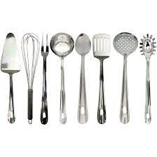

Sobre a Cafeteria Alura
Localizada no coração da cidade a Cafeteria Alura traz para o mercado o que há de melhor para o seu cabelo e barba. Fundada em 2019, a Caferia Alura já é destaque na cidade e conquista novos clientes a cada dia.
Nossa missão é: "Proporcionar auto-estima e qualidade de vida aos clientes".
Oferecemos profissionais experientes e antenados às mudanças no mundo da gastronomia. O atendimento possui padrão de excelência e agilidade, garantindo qualidade e satisfação dos nossos clientes.
Nosso estabelecimento
Nosso estabelecimento está localizado no coração da cidade.
Benefícios
- Atendimento aos clientes
- Espaço diferenciado
- Localização
- Profissionais qualificados
- Entrega rápida
- Limpeza